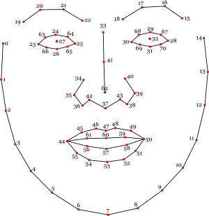

Consentful Interface for Camera
Description
I have found that recently most of my friends prefer to use photos of cute cats in online communication to express their feeling rather than their real photo or emoji. I also share the same preference. One reason might be that those cats are adorable, so we would love to see their photo. But more importantly, I thinking using facial expressions from another creature can help soften some extreme emotion.
我发现最近我的大多数朋友都喜欢在在线交流中使用可爱猫咪的照片来表达自己的感受，而不是真实的照片或表情符号。 我也有相同的偏好。 原因之一可能是这些猫很可爱，所以我们很乐意看到它们的照片。 但更重要的是，我认为使用其他生物的面部表情可以减轻某些极端情绪。
For instance, if you want to tell others that you are angry but also worried that an angry face might scare them, then you can use an angry face from a kitten. In this way you can express your dissatisfaction without completely damaging your relationships with others. So I want to make a “cat filter”.
例如，如果您想告诉别人您很生气，但又担心生气的脸会吓到他们，那么您可以使用小猫的生气的脸。 这样，您就可以表达自己的不满，而不会完全破坏与他人的关系。所以我想做一个“猫咪滤镜”。
Besides, I also added a series of consent pages, which requires users to fully understand all agreement clauses. I did this under the guidance of F.R.I.E.S. principles and I aim to encourage users pay more attention to their various rights even in the virtual world.
此外，我还添加了一系列同意页面，要求用户完全了解所有协议条款。 我是在F.R.I.E.S. 原则，我的目的是鼓励用户甚至在虚拟世界中也更多地关注其各种权利。
Design Process
At the first step, I want to present a camera screen as background frame, so I browsed and referenced some camera interface designs.
第一步，我想将相机屏幕显示为背景框架，因此我浏览并参考了一些相机界面设计。
Then I find two pair of eyes and mouths to represent cat face respectively. The distance between the eft and right corners of the mouth is used as standard to judge whether the people in front of camera has a happy face or sad face. And this technique and data comes from the document clmtrkr.js. So that I can place the cat eyes at the original eys place, and same for the mouth.
然后我发现两对眼睛和嘴巴分别代表猫的脸。 嘴的右上角和右上角之间的距离被用作判断相机前面的人是笑脸还是笑脸的标准。 这种技术和数据来自MIT开发的clmtrkr.js文档。 这样我就可以将猫眼放在眼睛的原始位置，也可以放在嘴上。

F.R.I.E.S. principles include following elements:
F.R.I.E.S. 原则包括如下元素
My basic design thoughts about its consentful interface come from this specific term, so my first idea is to divide all clauses into different categories and demonstrate them in different pages. After researching some APPs, I summarize out 4 aspects: notification, wireless data, phone features and collecting data. Also, in order to explain all permissions clearly without misleading, I add icons to better illustrate them.
我的基本设计思想来自这个原则，所以我的第一个想法是将所有用户同意条款划分为不同的类别，并在不同的页面中进行演示。 在研究了一些APP之后，我总结了4个方面：通知，无线数据，电话功能和收集数据。 另外，为了清楚地解释所有权限而不会引起误解，我添加了图标以更好地说明它们。
More importantly, I set a page as conclusion about what items that users have already agree, to make sure that all choices are not made under pressure or impulsion.
此外，我设置了一个页面作为用户已同意哪些项目的结论，以确保不会在压力或冲动下做出所有选择。